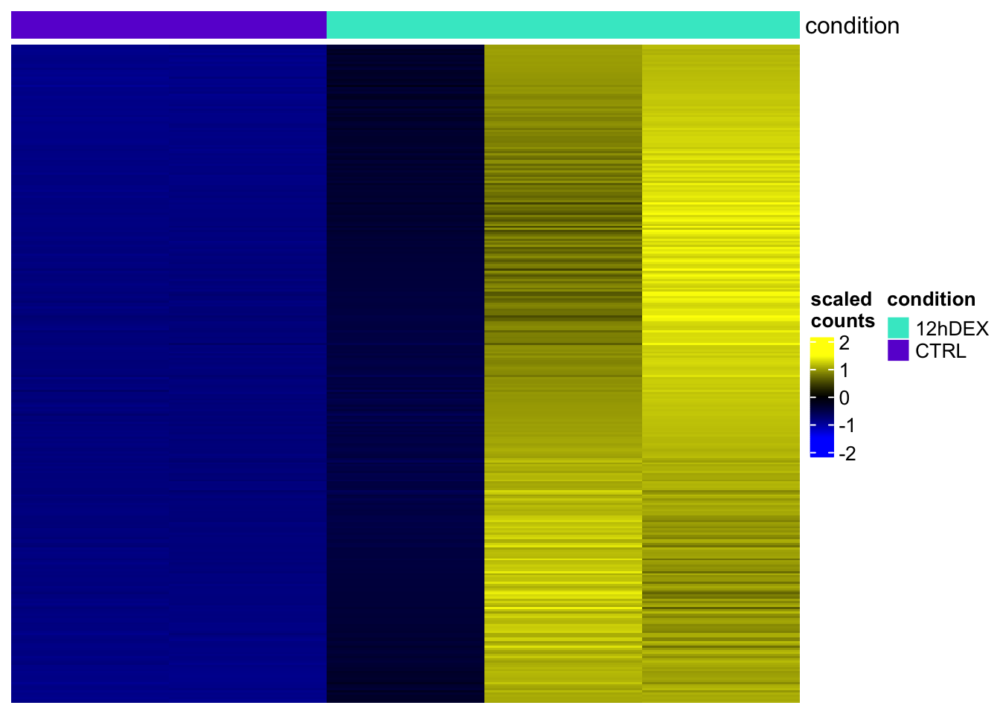
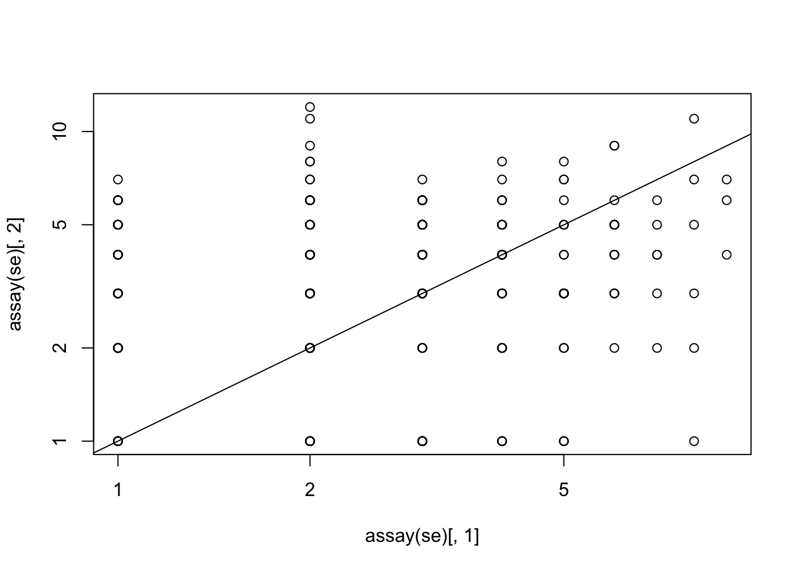
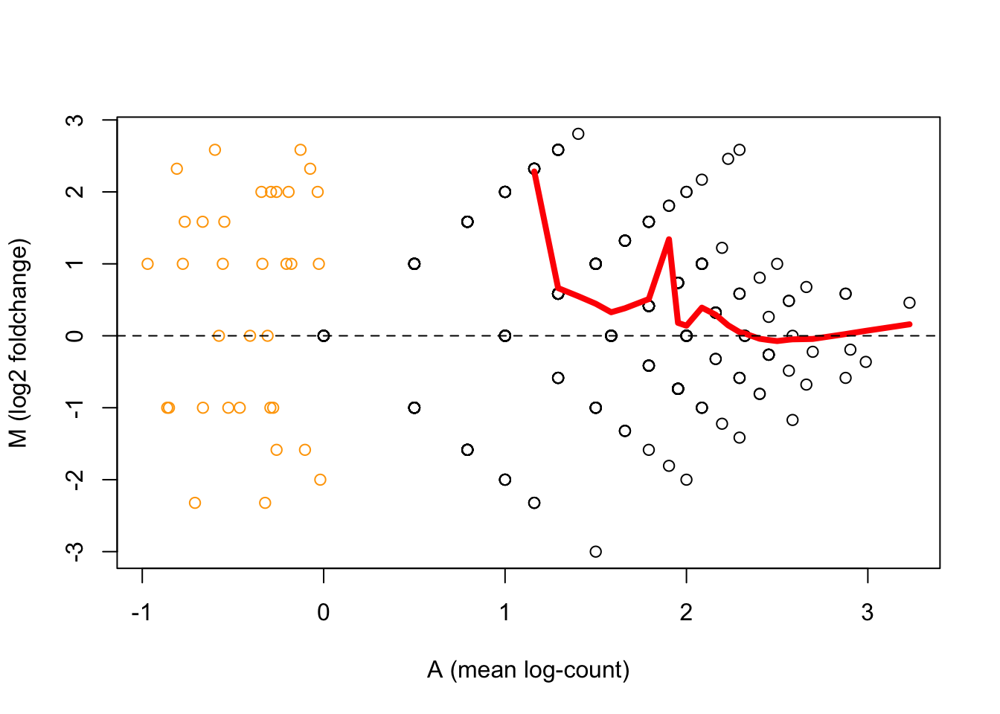
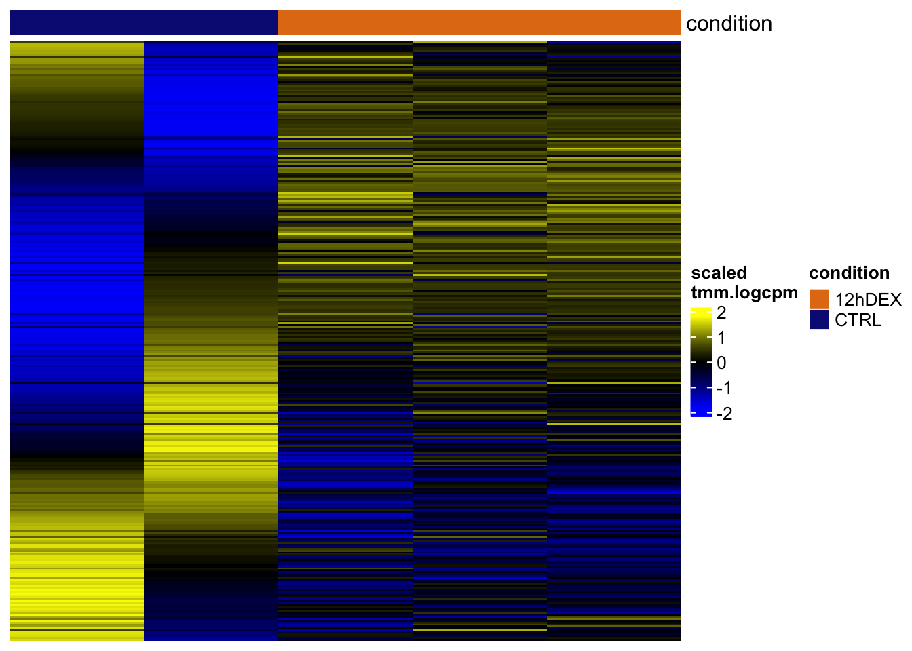
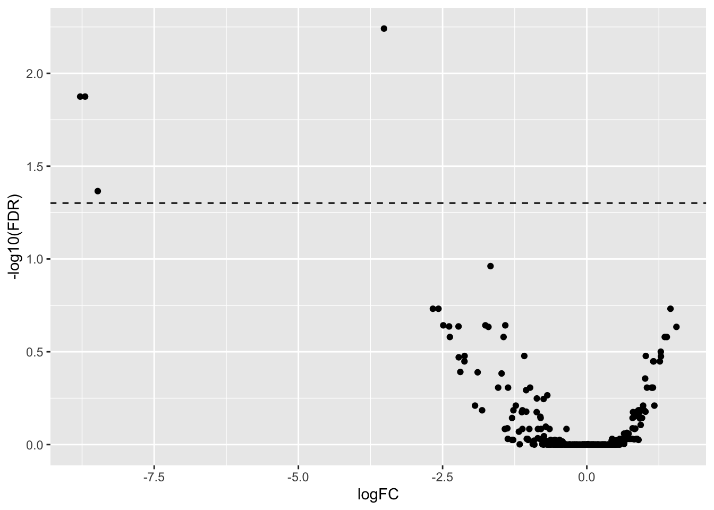
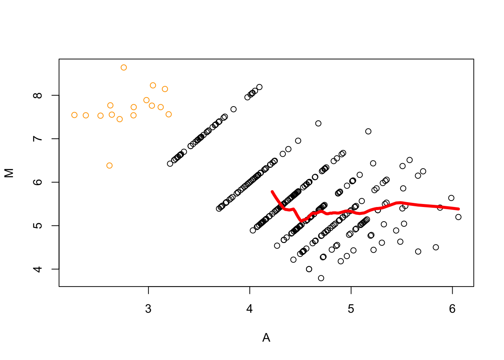
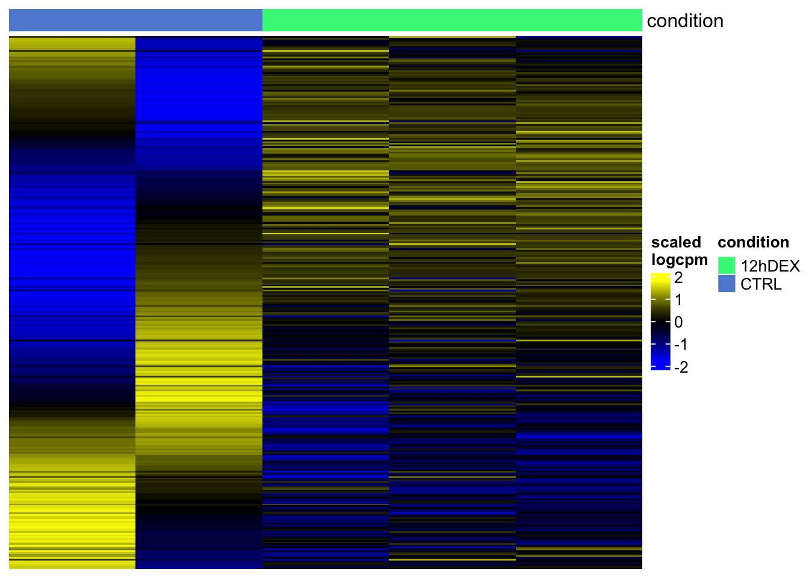
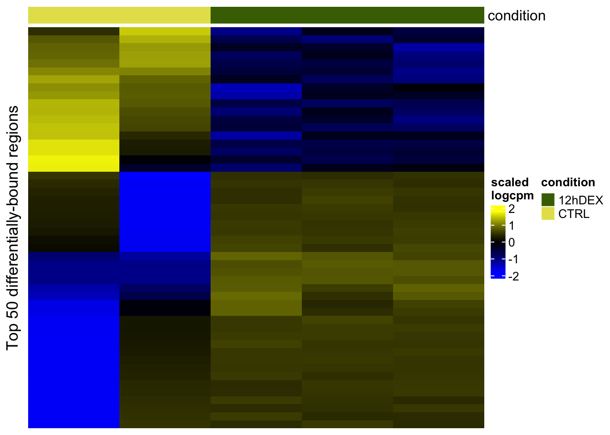
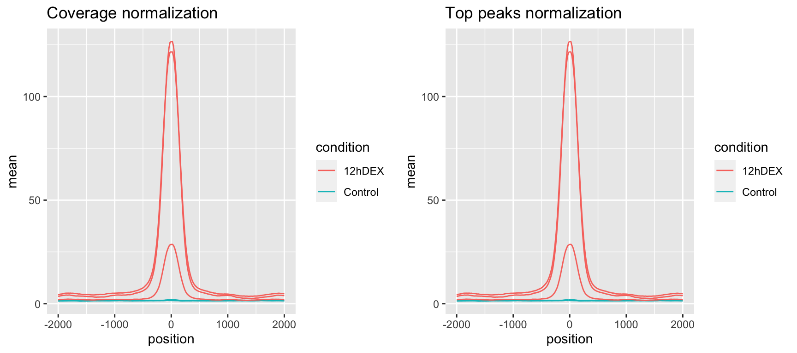

Differential Binding
Dominique Paul
2022-07-08
Last updated: 2022-07-08
Checks: 6 1
Knit directory: GR-PROTAC-analysis/analysis/
This reproducible R Markdown analysis was created with workflowr (version 1.7.0). The Checks tab describes the reproducibility checks that were applied when the results were created. The Past versions tab lists the development history.
The R Markdown is untracked by Git. To know which version of the R Markdown file created these results, you’ll want to first commit it to the Git repo. If you’re still working on the analysis, you can ignore this warning. When you’re finished, you can run wflow_publish to commit the R Markdown file and build the HTML.
Great job! The global environment was empty. Objects defined in the global environment can affect the analysis in your R Markdown file in unknown ways. For reproduciblity it’s best to always run the code in an empty environment.
The command set.seed(20220515) was run prior to running the code in the R Markdown file. Setting a seed ensures that any results that rely on randomness, e.g. subsampling or permutations, are reproducible.
Great job! Recording the operating system, R version, and package versions is critical for reproducibility.
Nice! There were no cached chunks for this analysis, so you can be confident that you successfully produced the results during this run.
Great job! Using relative paths to the files within your workflowr project makes it easier to run your code on other machines.
Great! You are using Git for version control. Tracking code development and connecting the code version to the results is critical for reproducibility.
The results in this page were generated with repository version 0f93e11. See the Past versions tab to see a history of the changes made to the R Markdown and HTML files.
Note that you need to be careful to ensure that all relevant files for the analysis have been committed to Git prior to generating the results (you can use wflow_publish or wflow_git_commit). workflowr only checks the R Markdown file, but you know if there are other scripts or data files that it depends on. Below is the status of the Git repository when the results were generated:
Ignored files:
Ignored: .DS_Store
Ignored: analysis/.DS_Store
Ignored: analysis/.Rhistory
Ignored: analysis/docs/.DS_Store
Ignored: data/.DS_Store
Ignored: data/EOS_files/
Ignored: data/reddy_bigwig_DEX12h_r123.bigWig
Ignored: data/reddy_bigwig_DEX2h_r123.bigWig
Ignored: data/reddy_bigwig_DEX6h_r123.bigWig
Ignored: data/reddy_bigwig_JUNB_DEX12h_r123.bigWig
Ignored: data/single_replicate_peaks/.DS_Store
Ignored: data/single_replicate_peaks/control/.DS_Store
Ignored: data/single_replicate_peaks/control/Chip_GR_control_s2.bigWig
Ignored: data/single_replicate_peaks/control/Chip_GR_control_s3.bigWig
Ignored: data/single_replicate_peaks/dex12h/.DS_Store
Ignored: data/single_replicate_peaks/dex12h/Chip_GR_12hDex_s1.bigWig
Ignored: data/single_replicate_peaks/dex12h/Chip_GR_12hDex_s2.bigWig
Ignored: data/single_replicate_peaks/dex12h/Chip_GR_12hDex_s3.bigWig
Ignored: output/.DS_Store
Untracked files:
Untracked: analysis/00_Download_files.Rmd
Untracked: analysis/01_Results.Rmd
Untracked: analysis/Q9-Differential_binding.Rmd
Untracked: data/Formatted_Candidate_ETG_20200305_TAD10Kb.tsv
Untracked: data/results/dds.rds
Untracked: data/single_replicate_peaks/peaks/
Unstaged changes:
Deleted: analysis/01_download_files.Rmd
Deleted: analysis/02_exploratory_analysis.Rmd
Deleted: analysis/08-Differential_binding.Rmd
Modified: analysis/Q1-Gene-overlap.Rmd
Modified: analysis/Q2-TF-Binding-to-DE-genes.Rmd
Modified: analysis/Q3-PROTAC-reversal.Rmd
Modified: analysis/Q4-GR-binding-PROTAC-genes.Rmd
Modified: analysis/about.Rmd
Modified: analysis/admin.Rmd
Modified: analysis/index.Rmd
Modified: data/results/SE.processed.rds
Deleted: data/single_replicate_peaks/control/Chip_GR_control_s2.bam.bai
Deleted: data/single_replicate_peaks/control/Chip_GR_control_s2_input.bam.bai
Deleted: data/single_replicate_peaks/dex12h/Chip_GR_12hDex_s1.bam.bai
Deleted: data/single_replicate_peaks/dex12h/Chip_GR_12hDex_s2_input.bam.bai
Deleted: output/Q2_GR_bound_DE_genes.xlsx
Deleted: output/Q4_KH_DE_GR_bound.xlsx
Note that any generated files, e.g. HTML, png, CSS, etc., are not included in this status report because it is ok for generated content to have uncommitted changes.
There are no past versions. Publish this analysis with wflow_publish() to start tracking its development.
Call peaks (bam -> bed)
Note: We only have two control samples as the first isogenic sample was not uploaded to encode. We call the peaks manually for the 12hDEX and 0h DEX data, as no bed files were uploaded for the 0h DEX data. We call the peak for both groups here to ensure that the peak calling method applied is the same.
macs2 callpeak --outdir ../data/single_replicate_peaks/peaks \
-n Chip_GR_12hDex_s1 \
--gsize dm \
-t ../data/single_replicate_peaks/dex12h/Chip_GR_12hDex_s1.bam \
-c ../data/single_replicate_peaks/dex12h/Chip_GR_12hDex_s1_input.bam \
--nomodel \
--extsize 200
macs2 callpeak --outdir ../data/single_replicate_peaks/peaks \
-n Chip_GR_12hDex_s2 \
--gsize dm \
-t ../data/single_replicate_peaks/dex12h/Chip_GR_12hDex_s2.bam \
-c ../data/single_replicate_peaks/dex12h/Chip_GR_12hDex_s2_input.bam \
--nomodel \
--extsize 200
macs2 callpeak --outdir ../data/single_replicate_peaks/peaks \
-n Chip_GR_12hDex_s3 \
--gsize dm \
-t ../data/single_replicate_peaks/dex12h/Chip_GR_12hDex_s3.bam \
-c ../data/single_replicate_peaks/dex12h/Chip_GR_12hDex_s3_input.bam \
--nomodel \
--extsize 200
macs2 callpeak --outdir ../data/single_replicate_peaks/peaks \
-n Chip_GR_control_s2 \
--gsize dm \
-t ../data/single_replicate_peaks/control/Chip_GR_control_s2.bam \
-c ../data/single_replicate_peaks/control/Chip_GR_control_s2_input.bam \
--nomodel \
--extsize 200
macs2 callpeak --outdir ../data/single_replicate_peaks/peaks \
-n Chip_GR_control_s3 \
--gsize dm \
-t ../data/single_replicate_peaks/control/Chip_GR_control_s3.bam \
-c ../data/single_replicate_peaks/control/Chip_GR_control_s3_input.bam \
--nomodel \
--extsize 200Differential binding analysis
Only the sample 2 and 3 of the 12h Dex treated group have peaks. The control samples 2 and 3 (1 was not uploaded) as well as treatment sample 1 have no peaks.
# load peaks
c2 <- import.bed15("../data/single_replicate_peaks/peaks/Chip_GR_control_s2_peaks.narrowPeak", format="narrowPeak")
c3 <- import.bed15("../data/single_replicate_peaks/peaks/Chip_GR_control_s3_peaks.narrowPeak", format="narrowPeak")
t12_1 <- import.bed15("../data/single_replicate_peaks/peaks/Chip_GR_12hDex_s1_peaks.narrowPeak", format="narrowPeak")
t12_2 <- import.bed15("../data/single_replicate_peaks/peaks/Chip_GR_12hDex_s2_peaks.narrowPeak", format="narrowPeak")
t12_3 <- import.bed15("../data/single_replicate_peaks/peaks/Chip_GR_12hDex_s3_peaks.narrowPeak", format="narrowPeak")
peaks <- list("c2"=c2, "c3"=c3,
"t12_1"=t12_1, "t12_2"=t12_2, "t12_3"=t12_3)
bamfiles <- c("../data/single_replicate_peaks/control/Chip_GR_control_s2.bam",
"../data/single_replicate_peaks/control/Chip_GR_control_s3.bam",
"../data/single_replicate_peaks/dex12h/Chip_GR_12hDex_s1.bam",
"../data/single_replicate_peaks/dex12h/Chip_GR_12hDex_s2.bam",
"../data/single_replicate_peaks/dex12h/Chip_GR_12hDex_s3.bam")regionUpset(peaks)
For downstream analysis, we’ll want to have a single set of regions that contains all the relevant regions. Regions that occur only in one sample are not really important, so we could filter them out, and then merge the regions.
merged_peaks <- reduce(unlist(GRangesList(peaks)), with.revmap=TRUE)
merged_peaks <- granges(merged_peaks[lengths(merged_peaks$revmap)>1]) # we could change the >1 here to require a higher minimum number of samples
merged_peaksGRanges object with 309 ranges and 0 metadata columns:
seqnames ranges strand
<Rle> <IRanges> <Rle>
[1] chr1 8004944-8005419 *
[2] chr1 8182234-8182649 *
[3] chr1 8212017-8212287 *
[4] chr1 8259072-8259915 *
[5] chr1 9436312-9436621 *
... ... ... ...
[305] chr9 110912605-110912893 *
[306] chr9 115944327-115944940 *
[307] chr9 121372531-121372804 *
[308] chrX 65772821-65773162 *
[309] chrX 72620618-72620828 *
-------
seqinfo: 23 sequences from an unspecified genome; no seqlengthsCounting the number of reads in each peak, in each sample
# create a vector with all the peak files in it, and giving it clean names:
# bamfiles <- list.files("aligned", pattern="bam$", full=TRUE)
# we give the samples clean names:
# names(bamfiles) <- gsub("\\.bam","",basename(bamfiles))
# for counting, we need to convert our GRanges object to a data.frame with the following specifications:
anno <- cbind(name=as.character(merged_peaks), as.data.frame(merged_peaks))
anno$width <- NULL
colnames(anno) <- c("GeneID", "Chr", "Start", "End", "Strand")
fc <- featureCounts( files=bamfiles, # the files in which we want to count reads
isPairedEnd=FALSE,
annot.ext=anno, # the regions in which we want to count reads
readExtension3=50, # extend the reads by 50bp
nthreads=3 # multithreading (to speed up)
)
========== _____ _ _ ____ _____ ______ _____
===== / ____| | | | _ \| __ \| ____| /\ | __ \
===== | (___ | | | | |_) | |__) | |__ / \ | | | |
==== \___ \| | | | _ <| _ /| __| / /\ \ | | | |
==== ____) | |__| | |_) | | \ \| |____ / ____ \| |__| |
========== |_____/ \____/|____/|_| \_\______/_/ \_\_____/
Rsubread 2.8.2
//========================== featureCounts setting ===========================\\
|| ||
|| Input files : 5 BAM files ||
|| ||
|| Chip_GR_control_s2.bam ||
|| Chip_GR_control_s3.bam ||
|| Chip_GR_12hDex_s1.bam ||
|| Chip_GR_12hDex_s2.bam ||
|| Chip_GR_12hDex_s3.bam ||
|| ||
|| Paired-end : no ||
|| Count read pairs : no ||
|| Annotation : R data.frame ||
|| Dir for temp files : . ||
|| Threads : 3 ||
|| Level : meta-feature level ||
|| Multimapping reads : counted ||
|| Multi-overlapping reads : not counted ||
|| Min overlapping bases : 1 ||
|| Read extension : 0 on 5' and 50 on 3' ends ||
|| ||
\\============================================================================//
//================================= Running ==================================\\
|| ||
|| Load annotation file .Rsubread_UserProvidedAnnotation_pid46018 ... ||
|| Features : 309 ||
|| Meta-features : 309 ||
|| Chromosomes/contigs : 23 ||
|| ||
|| Process BAM file Chip_GR_control_s2.bam... ||
|| Single-end reads are included. ||
|| Total alignments : 11918412 ||
|| Successfully assigned alignments : 872 (0.0%) ||
|| Running time : 0.20 minutes ||
|| ||
|| Process BAM file Chip_GR_control_s3.bam... ||
|| Single-end reads are included. ||
|| Total alignments : 13168495 ||
|| Successfully assigned alignments : 1062 (0.0%) ||
|| Running time : 0.13 minutes ||
|| ||
|| Process BAM file Chip_GR_12hDex_s1.bam... ||
|| Single-end reads are included. ||
|| Total alignments : 16653674 ||
|| Successfully assigned alignments : 11644 (0.1%) ||
|| Running time : 0.19 minutes ||
|| ||
|| Process BAM file Chip_GR_12hDex_s2.bam... ||
|| Single-end reads are included. ||
|| Total alignments : 14695293 ||
|| Successfully assigned alignments : 46289 (0.3%) ||
|| Running time : 0.21 minutes ||
|| ||
|| Process BAM file Chip_GR_12hDex_s3.bam... ||
|| Single-end reads are included. ||
|| Total alignments : 14613584 ||
|| Successfully assigned alignments : 51881 (0.4%) ||
|| Running time : 0.29 minutes ||
|| ||
|| Write the final count table. ||
|| Write the read assignment summary. ||
|| ||
\\============================================================================//We’re going to package this data into a SummarizedExperiment (SE) object:
se <- SummarizedExperiment(assays=list(counts=fc$counts), rowRanges=merged_peaks)
colnames(se) <- c("C2","C3","T1","T2","T3")
# we keep the counts in the input, but not as a normal sample:
# rowData(se)$input.count <- assay(se)[,"input.bam"]
# se <- se[,colnames(se)!="input.bam"]
# we assign the conditions:
# se$condition equivalent to colData(se)$condition
se$condition <- c("CTRL","12hDEX")[1+grepl("T",colnames(se))]
# is equivalent to:
# se$condition <- c("CTRL","CTRL","CTRL","MUT","MUT","MUT","MUT")
seclass: RangedSummarizedExperiment
dim: 309 5
metadata(0):
assays(1): counts
rownames(309): chr1:8004944-8005419 chr1:8182234-8182649 ...
chrX:65772821-65773162 chrX:72620618-72620828
rowData names(0):
colnames(5): C2 C3 T1 T2 T3
colData names(1): conditionNormalization
Let’s have a look at the counts:
head(assay(se)) C2 C3 T1 T2 T3
chr1:8004944-8005419 1 5 38 188 175
chr1:8182234-8182649 1 5 22 152 148
chr1:8212017-8212287 0 4 25 92 119
chr1:8259072-8259915 7 5 98 339 456
chr1:9436312-9436621 0 2 42 162 180
chr1:10388302-10388545 2 2 19 89 93head(assays(se)$counts) C2 C3 T1 T2 T3
chr1:8004944-8005419 1 5 38 188 175
chr1:8182234-8182649 1 5 22 152 148
chr1:8212017-8212287 0 4 25 92 119
chr1:8259072-8259915 7 5 98 339 456
chr1:9436312-9436621 0 2 42 162 180
chr1:10388302-10388545 2 2 19 89 93Let’s plot the counts for the first 500 regions:
sechm(se, head(row.names(se),500), assayName="counts", do.scale=TRUE, top_annotation = c("condition"))
Or another way to look at it:
plot(assay(se)[,1], assay(se)[,2], log="xy")Warning in xy.coords(x, y, xlabel, ylabel, log): 22 x values <= 0 omitted from
logarithmic plotWarning in xy.coords(x, y, xlabel, ylabel, log): 15 y values <= 0 omitted from
logarithmic plotabline(a=0, b=1)
The usual way we represent this kind of relation is through a M-A plot:
edgeR::maPlot(assay(se)[,1], assay(se)[,2], lowess=TRUE, ylab="M (log2 foldchange)",
xlab="A (mean log-count)"); abline(h=0, lty="dashed")
The standard approach would be to use the TMM normalization. HOWEVER, because some of our samples appear to have no peaks at all normalisation might distort the counts. We want to replace the library size column by the read counts.
read_counts <- sapply(bamfiles, function(bamfile){
aln <- scanBam(bamfile, param=ScanBamParam(what="qname"))
length(aln[[1]]$qname)
})
dds <- DGEList(assay(se), group=se$condition)
# We skip this due to the different peak per sample
# dds <- calcNormFactors(dds)
dds$libary.size <- read_counts
assays(se)$tmm.logcpm <- log1p(cpm(dds))
sechm(se, head(row.names(se),500), assayName="tmm.logcpm", do.scale = TRUE)
This made the 3 controls very consistent with each other, suggesting that the normalization worked.
From this, it looks like some regions have increased YY1 occupancy in the mutant, while others have decreased occupancy, and very little remains unaltered. We can also run the differential analysis and look at the results :
dds <- estimateDisp(dds)Using classic mode.et <- as.data.frame(topTags(exactTest(dds),n=Inf))
head(et) logFC logCPM PValue FDR
chr5:172869049-172869468 -3.515602 12.49215 1.857146e-05 0.005738581
chr12:6376197-6376471 -8.782395 11.26510 1.090899e-04 0.013341944
chr6:142376184-142376447 -8.697574 11.18713 1.295334e-04 0.013341944
chr11:123122426-123122655 -8.478058 10.96856 5.579489e-04 0.043101555
chrX:65772821-65773162 -1.669320 12.24520 1.768459e-03 0.109290759
chr20:31610720-31611048 -2.668320 11.68709 4.104379e-03 0.185418251We can represent the results of the analysis as a so-called ‘volcano plot’:
ggplot(et, aes(logFC, -log10(FDR))) + geom_point() +
geom_hline(yintercept=-log10(0.05), linetype="dashed")
(You can use the EnhancedVolcano package to make nicer-looking plots)
At a first glance, there seems to be roughly as many regions that increase in binding as regions that decrease in binding. Does this sound likely to you?
Let’s look again at an MA plot between a ctrl and a mutant:
edgeR::maPlot(assay(se)[,2], assay(se)[,5], lowess=TRUE); abline(h=0, lty="dashed")
Normalization based on top peaks
# we first calculate the peaks' median enrichment against the input
# rowData(se)$medianEnr <- matrixStats::rowMedians(assays(se)$tmm.logcpm - log1p(rowData(se)$input.count))
# we then select the top peaks based on that
# w <- head(order(rowData(se)$medianEnr, decreasing=TRUE), 200)
# we then estimate TMM normalization factors based on that:
# dds2 <- calcNormFactors(dds[w,,keep.lib.sizes=TRUE])
# dds2$samplesNotice that the norm.factors column is different than the one we previous had. We can now inject them into the full object:
# dds$samples$norm.factors <- dds2$samples$norm.factorsWe compute again the normalized logcpm and plot our matrix:
assays(se)$logcpm <- log1p(cpm(dds))
sechm(se, head(row.names(se),500), assayName="logcpm", do.scale = TRUE)
We can now do the differential analysis using these factors
dds <- estimateDisp(dds)Using classic mode.et <- as.data.frame(topTags(exactTest(dds),Inf))
head(et) logFC logCPM PValue FDR
chr5:172869049-172869468 -3.515602 12.49215 1.857146e-05 0.005738581
chr12:6376197-6376471 -8.782395 11.26510 1.090899e-04 0.013341944
chr6:142376184-142376447 -8.697574 11.18713 1.295334e-04 0.013341944
chr11:123122426-123122655 -8.478058 10.96856 5.579489e-04 0.043101555
chrX:65772821-65773162 -1.669320 12.24520 1.768459e-03 0.109290759
chr20:31610720-31611048 -2.668320 11.68709 4.104379e-03 0.185418251ggplot(et, aes(logFC, -log10(FDR))) + geom_point() +
geom_hline(yintercept=-log10(0.05), linetype="dashed")
(See ?edgeRUsersGuide() for how to apply edgeR to more complex experimental designs)
We could also visualize the top results in this way:
sechm(se, head(row.names(et),50), assayName="logcpm", do.scale=TRUE, row_title="Top 50 differentially-bound regions")
Applying the normalization for visualization
For comparison, we first plot using background normalization:
tracks <- list("C2"="../data/single_replicate_peaks/control/Chip_GR_control_s2.bigWig",
"C3"="../data/single_replicate_peaks/control/Chip_GR_control_s3.bigWig",
"t12_1"="../data/single_replicate_peaks/dex12h/Chip_GR_12hDex_s1.bigWig",
"t12_2"="../data/single_replicate_peaks/dex12h/Chip_GR_12hDex_s2.bigWig",
"t12_3"="../data/single_replicate_peaks/dex12h/Chip_GR_12hDex_s3.bigWig")
m <- signal2Matrix(tracks, merged_peaks)Reading ../data/single_replicate_peaks/control/Chip_GR_control_s2.bigWigReading ../data/single_replicate_peaks/control/Chip_GR_control_s3.bigWigReading ../data/single_replicate_peaks/dex12h/Chip_GR_12hDex_s1.bigWigReading ../data/single_replicate_peaks/dex12h/Chip_GR_12hDex_s2.bigWigReading ../data/single_replicate_peaks/dex12h/Chip_GR_12hDex_s3.bigWigplotEnrichedHeatmaps(m)
We now apply the normalization factors we calculated:
# we first make sure that the order of the samples matches:
cbind(colnames(dds), names(m)) [,1] [,2]
[1,] "C2" "C2"
[2,] "C3" "C3"
[3,] "T1" "t12_1"
[4,] "T2" "t12_2"
[5,] "T3" "t12_3"m2 <- rescaleSignalMatrices(m, scaleFactors=1/dds$samples$norm.factors)
plotEnrichedHeatmaps(m2)
Let’s look at it using just the average signal plots:
d1 <- meltSignals(m)
d1$condition <- gsub("[0-9]","",d1$sample)
d1$condition <- ifelse(d1$condition=="C", "Control", "12hDEX")
p1 <- ggplot(d1, aes(position, mean, group=sample, colour=condition)) + geom_line() + ggtitle("Coverage normalization")
d2 <- meltSignals(m2)
d2$condition <- gsub("[0-9]","",d2$sample)
d2$condition <- ifelse(d2$condition=="C", "Control", "12hDEX")
p2 <- ggplot(d2, aes(position, mean, group=sample, colour=condition)) + geom_line() + ggtitle("Top peaks normalization")
ggpubr::ggarrange(p1, p2, ncol=2)
Using background normalization
# here I have to specify the chromosomes to use because the bigwig files contain only those
nf <- bwNormFactors(tracks)
m3 <- rescaleSignalMatrices(m, scaleFactors=1/nf)
d3 <- meltSignals(m3)
d3$condition <- gsub("[0-9]","",d3$sample)
d3$condition <- ifelse(d3$condition=="C", "Control", "12hDEX")
p3 <- ggplot(d3, aes(position, mean, group=sample, colour=condition)) + geom_line() + ggtitle("Background normalization")
ggpubr::ggarrange(p2, p3, ncol=2)
sessionInfo()R version 4.1.0 (2021-05-18)
Platform: x86_64-apple-darwin17.0 (64-bit)
Running under: macOS Big Sur 10.16
Matrix products: default
BLAS: /Library/Frameworks/R.framework/Versions/4.1/Resources/lib/libRblas.dylib
LAPACK: /Library/Frameworks/R.framework/Versions/4.1/Resources/lib/libRlapack.dylib
locale:
[1] en_US.UTF-8/en_US.UTF-8/en_US.UTF-8/C/en_US.UTF-8/en_US.UTF-8
attached base packages:
[1] grid stats4 stats graphics grDevices utils datasets
[8] methods base
other attached packages:
[1] ggplot2_3.3.6 rtracklayer_1.54.0
[3] Rsamtools_2.10.0 Biostrings_2.62.0
[5] XVector_0.34.0 edgeR_3.36.0
[7] limma_3.50.3 sechm_1.2.0
[9] SummarizedExperiment_1.24.0 Biobase_2.54.0
[11] MatrixGenerics_1.6.0 matrixStats_0.62.0
[13] Rsubread_2.8.2 epiwraps_0.99.42
[15] EnrichedHeatmap_1.24.0 ComplexHeatmap_2.10.0
[17] GenomicRanges_1.46.1 GenomeInfoDb_1.30.1
[19] IRanges_2.28.0 S4Vectors_0.32.4
[21] BiocGenerics_0.40.0 dplyr_1.0.9
loaded via a namespace (and not attached):
[1] backports_1.4.1 circlize_0.4.15 Hmisc_4.7-0
[4] workflowr_1.7.0 BiocFileCache_2.2.1 plyr_1.8.7
[7] lazyeval_0.2.2 splines_4.1.0 BiocParallel_1.28.3
[10] digest_0.6.29 ensembldb_2.18.4 foreach_1.5.2
[13] htmltools_0.5.2 magick_2.7.3 fansi_1.0.3
[16] magrittr_2.0.3 checkmate_2.1.0 memoise_2.0.1
[19] BSgenome_1.62.0 cluster_2.1.3 doParallel_1.0.17
[22] prettyunits_1.1.1 jpeg_0.1-9 colorspace_2.0-3
[25] blob_1.2.3 rappdirs_0.3.3 xfun_0.31
[28] crayon_1.5.1 RCurl_1.98-1.7 jsonlite_1.8.0
[31] survival_3.3-1 VariantAnnotation_1.40.0 iterators_1.0.14
[34] glue_1.6.2 registry_0.5-1 gtable_0.3.0
[37] zlibbioc_1.40.0 UpSetR_1.4.0 V8_4.2.0
[40] GetoptLong_1.0.5 DelayedArray_0.20.0 car_3.1-0
[43] shape_1.4.6 abind_1.4-5 scales_1.2.0
[46] DBI_1.1.3 rstatix_0.7.0 randomcoloR_1.1.0.1
[49] Rcpp_1.0.8.3 viridisLite_0.4.0 progress_1.2.2
[52] htmlTable_2.4.0 clue_0.3-61 foreign_0.8-82
[55] bit_4.0.4 Formula_1.2-4 htmlwidgets_1.5.4
[58] httr_1.4.3 RColorBrewer_1.1-3 ellipsis_0.3.2
[61] farver_2.1.1 pkgconfig_2.0.3 XML_3.99-0.10
[64] Gviz_1.38.4 nnet_7.3-17 sass_0.4.1
[67] dbplyr_2.2.1 deldir_1.0-6 locfit_1.5-9.5
[70] utf8_1.2.2 labeling_0.4.2 tidyselect_1.1.2
[73] rlang_1.0.3 later_1.3.0 AnnotationDbi_1.56.2
[76] munsell_0.5.0 tools_4.1.0 cachem_1.0.6
[79] cli_3.3.0 generics_0.1.3 RSQLite_2.2.14
[82] broom_1.0.0 evaluate_0.15 stringr_1.4.0
[85] fastmap_1.1.0 yaml_2.3.5 knitr_1.39
[88] bit64_4.0.5 fs_1.5.2 purrr_0.3.4
[91] KEGGREST_1.34.0 AnnotationFilter_1.18.0 xml2_1.3.3
[94] biomaRt_2.50.3 compiler_4.1.0 rstudioapi_0.13
[97] filelock_1.0.2 curl_4.3.2 png_0.1-7
[100] ggsignif_0.6.3 tibble_3.1.7 bslib_0.3.1
[103] stringi_1.7.6 highr_0.9 GenomicFeatures_1.46.5
[106] GenomicFiles_1.30.0 lattice_0.20-45 ProtGenerics_1.26.0
[109] Matrix_1.4-1 vctrs_0.4.1 pillar_1.7.0
[112] lifecycle_1.0.1 jquerylib_0.1.4 GlobalOptions_0.1.2
[115] cowplot_1.1.1 data.table_1.14.2 bitops_1.0-7
[118] seriation_1.3.5 httpuv_1.6.5 R6_2.5.1
[121] BiocIO_1.4.0 latticeExtra_0.6-30 TSP_1.2-0
[124] promises_1.2.0.1 gridExtra_2.3 codetools_0.2-18
[127] dichromat_2.0-0.1 assertthat_0.2.1 rprojroot_2.0.3
[130] rjson_0.2.21 withr_2.5.0 GenomicAlignments_1.30.0
[133] GenomeInfoDbData_1.2.7 parallel_4.1.0 hms_1.1.1
[136] rpart_4.1.16 tidyr_1.2.0 rmarkdown_2.14
[139] carData_3.0-5 Rtsne_0.16 ggpubr_0.4.0
[142] git2r_0.30.1 biovizBase_1.42.0 base64enc_0.1-3
[145] interp_1.1-2 restfulr_0.0.15